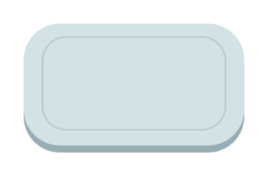
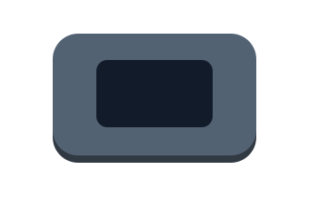
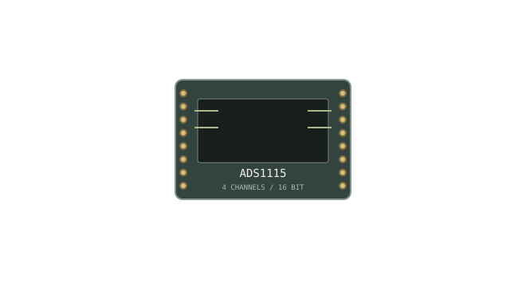
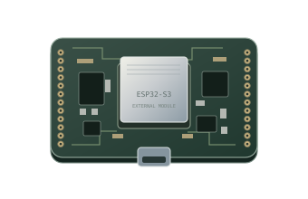
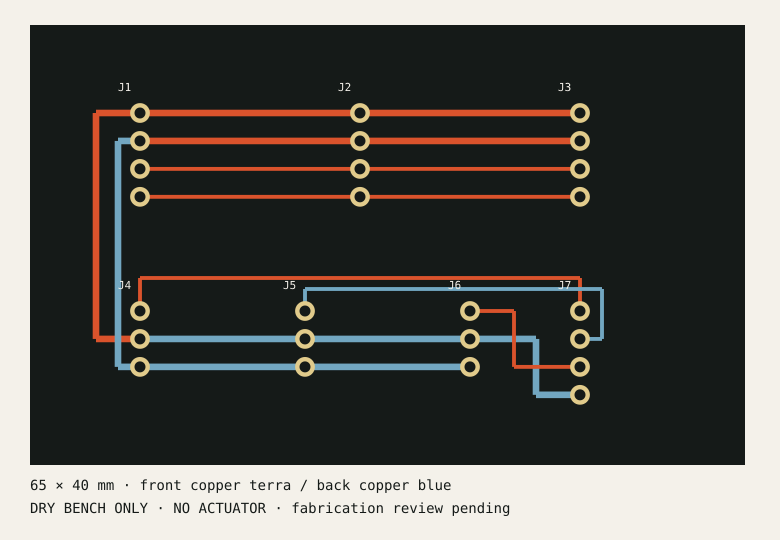

RESEARCH IN THE OPEN / BUILT BY RISHIK RONTALA
A closer look.
A clearer question.
A sensing system you can take apart.
A model you can inspect. Every signal,
with its limits in view.
HUMAN REVIEW ALWAYS.
01 / EXPLODED ANATOMY
Layer by layer.
Scroll to open the assembly and inspect its proposed layers.






Cover, carrier and mount are design concepts. The wired sensing modules and PCB remain bench prototypes; this is not a validated wearable assembly.
02 / THE SIGNAL OBSERVATORY
See the signal.
Question the conclusion.
Four channels. One inspectable window. A local model trained on simulated patterns, with a separate quality gate and human review.
Imports stay in this browser and always enter the review hold. Maximum 100 KB; 8–240 samples.
USB disconnected. Connection requires a compatible browser and your port selection.
Signal traces
Inspect the evidence and model limits
Held-out simulation
1,200 training runs · 300 validation runs · 300 test runs. Independent run seeds; training-only normalization. Ground truth comes from injected simulation patterns.
31 of 100 simulated sensor faults were classified as steady. A quality gate catches missing and held readings separately; this does not establish reliable detection of real sensor faults.
Inspect the build
24 features → 32 tanh units → 3 softmax outputs. Trained from scratch with NumPy; browser inference uses the exported weights.
Training report · Model weights · Board drawing · Firmware setupCurrent readings
| Time (s) | pH | Temperature (°C) | Wetness (%) | Glucose signal (AU) |
|---|
03 / DRY BENCH INTERFACE
The board is a sensing hub.
ESP32-S3 Feather, ADS1115 and TMP117 modules connect through a passive 65 × 40 mm board. Analog channels require conditioned 0–3 V signals and reviewed calibration. Glucose signal is arbitrary units, not blood glucose.
Hardware is not assembled or validated. The PCB draft still requires KiCad rule checks and a physical wiring review.
